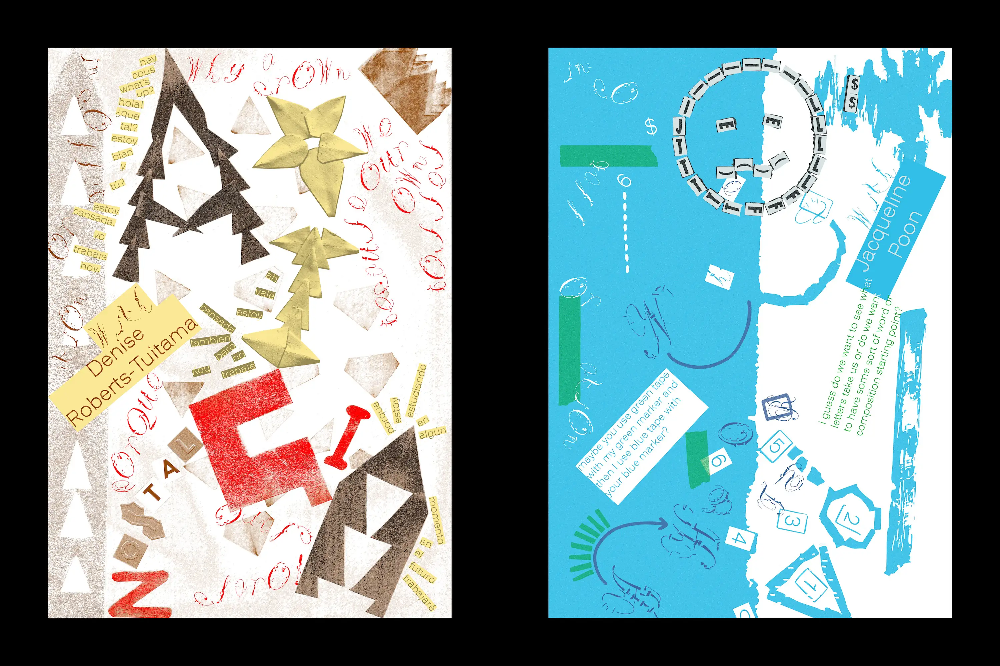
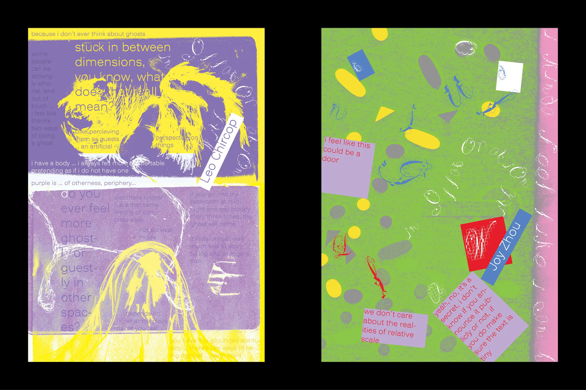

This typeface will be available soon.
I have tried many times to think of a good name for this typeface, and I still have not thought of one.
The concept is simple—there isn’t one. It is a project born entirely of intuitive play.
Destorting, deconstructing and altering an exisiting typeface, the developmental process was about trying to find a balance between fracture and legiblity.
The decorative elements present in the capital letters were kept throughout the lowercase and the rest of the characters.
Additional deconstruction and assemblage is applied to characters that fall outside the limited imagining of the basic Latin symbols.


Copyright © . All Rights Reserved.